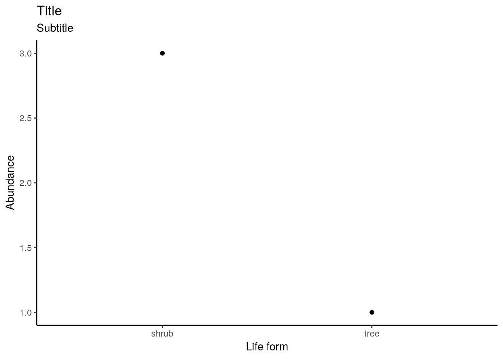
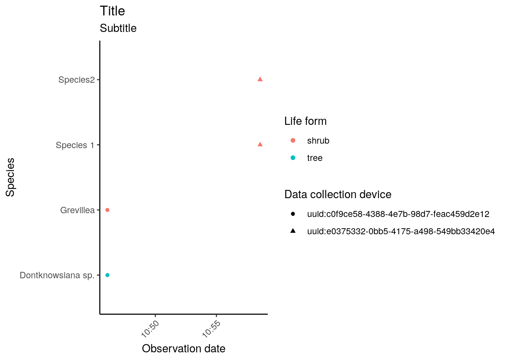

This vignette demonstrates ruODK’s workflow to extract data from ODK Central’s OData service endpoint, and to prepare the data and the media attachments for further analysis and visualisation.
The demonstrated workflow is roughly equivalent to ODK Central’s “Export all data”, which downloads all submissions and all repeating subgroups as CSV spreadsheets, and all media attachments in a local subfolder “attachments”.
An alternative pathway to getting data out of ODK Central is to use the REST API as documented (with live examples in multiple programming languages) at the ODK Central API docs.
Set your ODK Central username (email) and password as R environment variables, e.g. in your ~/.Rprofile.
If we know our ODK Central URL, the project ID (a number) and the respective form ID (an alphanumeric string), we can infer the OData service URL.
Alternatively, the OData service URL is shown in the form’s “Submissions” tab > “Analyze via OData” on ODK Central.
# ODK Central credentials
if (file.exists("~/.Rprofile")) source("~/.Rprofile")
# ODK Central's OData URL
data_url <- "https://sandbox.central.opendatakit.org/v1/projects/14/forms/build_Flora-Quadrat-0-2_1558575936.svc"
data("fq_meta")
data("fq_raw")
data("fq_tae")In our example, the OData service URL is https://sandbox.central.opendatakit.org/v1/projects/14/forms/build_Flora-Quadrat-0-2_1558575936.svc. Let’s first get the metadata to review our data schema.
Each downloadable table is an EntityType under DataServices.Schema. The main form is called “Submissions”. Repeating form groups, as in our example “taxon_encounter”, are named “Submissions.taxon_encounter”. The exact name is found under DataServices.Schema.EntityType[n].attrs.Name.
So let’s download the form submissions and, separately, repeating form groups.
fq_raw <- get_submissions(data_url)
fq_tae <- get_submissions(data_url, sub="Submissions.taxon_encounter")The output of the above code is provided as data objects fq_raw (main submissions of form Flora Quadrat 0.2) and fq_tae (repeated group “Taxon Encounter” within a Flora Quadrat).
The function ruODK::get_submissions returned the original XML response as a nested list of lists. To analyse and visualise the data, this nested list of lists must be transformed into a rectangular shape. The function ruODK::parse_submissions recursively unnests list columns using (tidyr::unnest_wider). Unnamed columns, notably the anonymous lat/lon/alt coordinates, are named automatically to become unique.
In this example, we clean up the output further by renaming some columns, notably we call the submission UUID uuid, and rename the main coordinates from ...12 and ...13 to longitude and latitude.
The vectorised function get_attachment downloads and links attachments like photos and other media to a local, relative path. This will take some time during the first run; once the files exist locally, the download will be skipped.
The date formats are parsed from ISO8601 timestamps into POSIXct objects with lubridate::parse_date_time. We use our local timezone (GMT+08) in this example.
Other ODK forms will need to select their respective media attachment field names for get_attachment, and their respective date/datetime/time field names as well as their local timezone (if desired) for lubridate.
The trailing invisible is a neutral operation to allow trailing magrittr pipelines %>% while commenting individual lines of the pipelines in or out.
The repeated subgroup taxon_encounter is joined with the main observation to receive a (repeated) copy of the main observation’s values (such as observation time and habitat description). The join benefits from the manually renamed uuid columns in either tibble.
For clarity, we enable verbose messages from parse_submissions and preserve the message output in the code chunk options with message=TRUE.
ord <- "YmdHMSz"
tz <- "Australia/Perth"
fq_data <- fq_raw %>% parse_submissions(verbose=TRUE) %>%
dplyr::rename(
uuid=`.__id`,
longitude=`...12`,
latitude=`...13`
) %>%
dplyr::mutate(
quadrat_photo = get_attachment(data_url, uuid, quadrat_photo),
morphological_type_photo = get_attachment(data_url, uuid, morphological_type_photo),
mudmap_photo = get_attachment(data_url, uuid, mudmap_photo),
submissionDate = lubridate::parse_date_time(submissionDate, orders=ord, tz = tz),
encounter_start_datetime = lubridate::parse_date_time(encounter_start_datetime, orders=ord, tz = tz),
encounter_end_datetime = lubridate::parse_date_time(encounter_end_datetime, orders=ord, tz = tz)
) %>%
invisible
#> Unnesting column 'value'
#> New names:
#> * `__id` -> .__id
#> * `__system` -> .__system
#> * `@odata.context` -> .odata.context
#> Found more nested columns, unnesting again.
#> Unnesting column '.__system'
#> Unnesting column 'meta'
#> Unnesting column 'location'
#> Unnesting column 'habitat'
#> Unnesting column 'vegetation_structure'
#> Unnesting column 'perimeter'
#> Found more nested columns, unnesting again.
#> Unnesting column 'corner1'
#> Unnesting column 'corner2'
#> New names:
#> * type -> type...11
#> * coordinates -> coordinates...12
#> * type -> type...16
#> * coordinates -> coordinates...17
#> Unnesting column 'corner3'
#> New names:
#> * type -> type...18
#> * coordinates -> coordinates...19
#> Unnesting column 'corner4'
#> New names:
#> * type -> type...20
#> * coordinates -> coordinates...21
#> Found more nested columns, unnesting again.
#> Unnesting column 'coordinates...12'
#> New names:
#> * `` -> ...1
#> * `` -> ...2
#> * `` -> ...3
#> New names:
#> * `` -> ...1
#> * `` -> ...2
#> * `` -> ...3
#> New names:
#> * ...1 -> ...12
#> * ...2 -> ...13
#> * ...3 -> ...14
#> * type...16 -> type...18
#> * coordinates...17 -> coordinates...19
#> * … and 4 more problems
#> Skipping renamed column 'coordinates...17'
#> Unnesting column 'coordinates...19'
#> New names:
#> * `` -> ...1
#> * `` -> ...2
#> * `` -> ...3
#> New names:
#> * `` -> ...1
#> * `` -> ...2
#> * `` -> ...3
#> New names:
#> * ...1 -> ...19
#> * ...2 -> ...20
#> * ...3 -> ...21
#> * type...20 -> type...22
#> * coordinates...21 -> coordinates...23
#> * … and 2 more problems
#> Skipping renamed column 'coordinates...21'
#> Found more nested columns, unnesting again.
#> Unnesting column 'coordinates...23'
#> New names:
#> * `` -> ...1
#> * `` -> ...2
#> * `` -> ...3
#> New names:
#> * `` -> ...1
#> * `` -> ...2
#> * `` -> ...3
#> New names:
#> * ...1 -> ...23
#> * ...2 -> ...24
#> * ...3 -> ...25
#> * type...24 -> type...26
#> * coordinates...25 -> coordinates
#> Skipping renamed column 'coordinates...25'
#> Found more nested columns, unnesting again.
#> Unnesting column 'coordinates'
#> New names:
#> * `` -> ...1
#> * `` -> ...2
#> * `` -> ...3
#> New names:
#> * `` -> ...1
#> * `` -> ...2
#> * `` -> ...3
#> New names:
#> * ...1 -> ...27
#> * ...2 -> ...28
#> * ...3 -> ...29
#> Date in ISO8601 format; converting timezone from UTC to "Australia/Perth".
#> Date in ISO8601 format; converting timezone from UTC to "Australia/Perth".
#> Date in ISO8601 format; converting timezone from UTC to "Australia/Perth".
fq_data_tae <- fq_tae %>%
parse_submissions(verbose=TRUE) %>%
dplyr::rename(
tae_uuid=`.__id`,
uuid=`.__Submissions.id`) %>%
dplyr::mutate(
photo_in_situ = get_attachment(data_url, uuid, photo_in_situ)
) %>%
dplyr::left_join(fq_data, by="uuid") %>%
invisible
#> Unnesting column 'value'
#> New names:
#> * `__id` -> .__id
#> * `__Submissions-id` -> .__Submissions.id
#> * `@odata.context` -> .odata.context
#> Found more nested columns, unnesting again.
#> Unnesting column 'taxon_encounter_location'
#> Found more nested columns, unnesting again.
#> Unnesting column 'coordinates'
#> New names:
#> * `` -> ...1
#> * `` -> ...2
#> * `` -> ...3
#> New names:
#> * `` -> ...1
#> * `` -> ...2
#> * `` -> ...3
#> New names:
#> * `` -> ...1
#> * `` -> ...2
#> * `` -> ...3
#> New names:
#> * `` -> ...1
#> * `` -> ...2
#> * `` -> ...3
#> New names:
#> * ...1 -> ...6
#> * ...2 -> ...7
#> * ...3 -> ...8Note: A manually resized version of the original photos in this example live in the package source under docs/articles/attachments. To minimise package size, they were resized with imagemagick: find docs/articles/attachments/ -maxdepth 2 -type f -exec mogrify -resize 300x200 {} \;.
The unnesting could also be done manually by building up a pipeline, which stepwise unnests each list column. This requires knowledge of the data structure, which can either be looked up from the metadata, or by inspecting the raw data, fq_raw.
fq_data_diy <- tibble::tibble(value=fq_raw$value) %>%
tidyr::unnest_wider(value) %>%
# 1. find list columns:
tidyr::unnest_wider(`__system`) %>%
tidyr::unnest_wider(meta) %>%
# add more lines here to unnest other form groups
#
# 2. rename column names
dplyr::rename(
uuid=`__id`
# add more columns, e.g.
# longitude=`...1`, latitude=`...2`, altitude=`...3`
) %>%
# 3. handle media attachments
# dplyr::mutate(photo_field1 = get_attachment(data_url, uuid, photo_field1)) %>%
invisibleThis section provides some examples of standard data visualisations.
Package leaflet provides interactive maps.
Constructing label and popup requires knowledge of the dataset structure.
leaflet::leaflet(width = 800, height = 600) %>%
leaflet::addProviderTiles("OpenStreetMap.Mapnik", group = "Place names") %>%
leaflet::addProviderTiles("Esri.WorldImagery", group = "Aerial") %>%
leaflet::clearBounds() %>%
leaflet::addAwesomeMarkers(
data = fq_data,
lng = ~longitude, lat = ~latitude,
icon = leaflet::makeAwesomeIcon(text = "Q", markerColor = "red"),
label = ~glue::glue('{area_name} {encounter_start_datetime}'),
popup = ~glue::glue(
"<h3>{area_name}</h3>",
"Survey start {encounter_start_datetime}</br>",
"Reporter {reporter}</br>",
"Device {device_id}</br>",
"<h5>Site</h5>",
'<div><img src="{quadrat_photo}"',
' height="150px" alt="Quadrat photo"></img></div>',
"<h5>Mudmap</h5>",
'<div><img src="{mudmap_photo}',
' height="150px" alt="Mudmap"></img></div>',
"<h5>Habitat</h5>",
"Morphological type: {morphological_type}</br>",
'<div><img src="{morphological_type_photo}"',
'height="150px" alt="Morphological type"></img></div>',
"Veg class: {vegclass_placeholder}</br>"
),
clusterOptions = leaflet::markerClusterOptions()
) %>%
leaflet::addLayersControl(
baseGroups = c("Place names", "Aerial"),
options = leaflet::layersControlOptions(collapsed = FALSE)
)leaflet::leaflet(width = 800, height = 600) %>%
leaflet::addProviderTiles("OpenStreetMap.Mapnik", group = "Place names") %>%
leaflet::addProviderTiles("Esri.WorldImagery", group = "Aerial") %>%
leaflet::clearBounds() %>%
leaflet::addAwesomeMarkers(
data = fq_data_tae,
lng = ~...6, lat = ~...7,
icon = leaflet::makeAwesomeIcon(text = "T", markerColor = "green"),
label = ~glue::glue('{canonical_name} {encounter_start_datetime}'),
popup = ~glue::glue(
"<h3>{area_name}</h3>",
"Survey start {encounter_start_datetime}</br>",
"Reporter {reporter}</br>",
"Device {device_id}</br>",
"<h5>Taxon</h5>",
'<div><img src="{photo_in_situ}"',
' height="150px" alt="Taxon in situ"></img></div>',
"Specimen barcode: {voucher_specimen_barcode}</br>",
"Life form: {life_form}</br>"
),
clusterOptions = leaflet::markerClusterOptions()
) %>%
leaflet::addLayersControl(
baseGroups = c("Place names", "Aerial"),
options = leaflet::layersControlOptions(collapsed = FALSE)
)The data tibbles are now “tidy” for exploratory data analysis. See Hadley Wickam’s R for Data Science for more background.
# How many submissions per device?
fq_data %>%
dplyr::group_by(instanceID) %>%
dplyr::tally() %>%
knitr::kable()| instanceID | n |
|---|---|
| uuid:c0f9ce58-4388-4e7b-98d7-feac459d2e12 | 1 |
| uuid:e0375332-0bb5-4175-a498-549bb33420e4 | 1 |
# How many species sightings per life form?
fq_data_tae %>%
dplyr::group_by(life_form) %>%
dplyr::tally() %>%
knitr::kable()| life_form | n |
|---|---|
| shrub | 3 |
| tree | 1 |
# GGplot of a pivot table
fq_data_tae %>%
dplyr::group_by(life_form) %>%
dplyr::tally() %>%
ggplot2::ggplot(ggplot2::aes(x=life_form, y=n)) +
ggplot2::labs(
title="Title",
subtitle="Subtitle",
x="Life form",
y="Abundance") +
ggplot2::geom_point() +
ggplot2::theme_classic()
# GGplot with groups
fq_data_tae %>%
ggplot2::ggplot(
ggplot2::aes(
x=encounter_start_datetime,
y=canonical_name,
colour=life_form,
shape=instanceID)) +
ggplot2::labs(
title="Title",
subtitle="Subtitle",
x="Observation date",
y="Species",
colour="Life form",
shape="Data collection device") +
ggplot2::geom_point() +
ggplot2::theme_classic() +
theme(axis.text.x = element_text(angle = 45, hjust = 1))